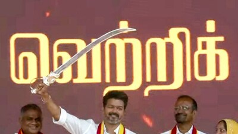
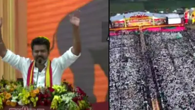

Actor Vijay Calls Out Political Enemies In First Maanadu

Actor Vijay drew first blood in Tamil Nadus Vikravandi on Sunday as he made his maiden public speech in front of his legions of fans and followers. The Tamilaga Vettri Kazhagam (TVK) chief delivered a highly charged, well-drafted political speech where he clearly outlined who are his two political enemies – the Dravida Munnetra Kazhagam (DMK) and other political entities who he claims are bent on leveraging religious and caste fissures in the society.
In First Speech, Thalapathy Vijay Identifies Political Enemies But Keeps Doors Open For Alliances>
 Actor Vijay delivered a highly charged, well-drafted political speech on Sunday that clearly marked two political enemies — DMK and the plethora of political forces bent on leveraging religious and caste fissures in society.BJP Ideological Opponent, DMK Political Adversary': Actor-Turned-Politician Vijay At TVK Rally>
Tamil superstar turned politician and founder of Tamizhaga Vetri Kazhagam (TVK), Vijay, said on Sunday that the BJP is the ideological opponent of the TVK while the DMK is its political adversary.
Tamilaga Vettri Kazhagam conference: Vijay lambasts looting in the name of Dravidian model

Setting his path clear in politics, actor and Tamilaga Vettri Kazhagam (TVK) president Vijay, on Sunday (October 27, 2024) declared that his party will fight against sectarian forces “ideologically” and ‘Dravidian model’-invoking corrupt forces “politically”. He also declared the party is open to sharing power with parties, which approach the TVK in 2026 Assembly polls in Tamil Nadu.